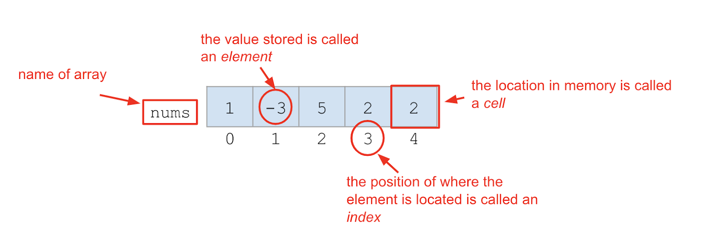

Lesson 1 - Lists
At the end of this lesson, you will be able to:
- Create a list to hold many values in a single variable.
- Access and change list elements by their index, and slice out pieces of a list.
- Add and remove items, and find a list's length.
Why lists?
Until now, each variable has held a single value. But real data comes in bunches: a shopping list, a playlist, the scores on a quiz, the students in a section. A list lets you hold a whole collection of values in one variable. (You've actually met a sequence already - a string is a sequence of characters. A list is the same idea, but the items can be anything.)
You create a list with square brackets [ ], separating items with commas. Two of the most common things you'll do are append() an item onto the end and remove() one:
def main():
# create a list of strings
shopping_list = ['apples', 'la croix', 'mango', 'rice']
print(shopping_list)
shopping_list.append('chicken') # add to the end
print(shopping_list)
shopping_list.remove('mango') # remove an item
print(shopping_list)
main()Reaching into a list: indexing
Every item in a list sits in a numbered slot. Some vocabulary: the list has a name, each slot has an index (its position number), and the value in a slot is an element.

Figure 6.1. List vocabulary
Just like with strings, indexing starts at 0. So in a list called nums, nums[0] is the first element and nums[1] is the second. You can read an element or assign a new value into a slot. Step through this and watch the list change as each line runs:
 Bug Alert: Because indexes start at 0, the last index is always one less than the number of items. A list with 5 elements has indexes 0, 1, 2, 3, 4. For a list of size N, the last index is N - 1. Asking for
Bug Alert: Because indexes start at 0, the last index is always one less than the number of items. A list with 5 elements has indexes 0, 1, 2, 3, 4. For a list of size N, the last index is N - 1. Asking for nums[5] in a 5-item list is an error!
Slicing and length
Lists slice exactly like strings: nums[1:4] gives you a new list of the elements from index 1 up to (but not including) 4. And len() tells you how many elements a list has - which you'll use constantly:
nums = [10, 20, 30, 40, 50]
print(nums[1:4]) # [20, 30, 40]
print(len(nums)) # 5Check for understanding
Coming up next: a list isn't much use if you have to handle every element by hand. Next we loop over lists - and build classic algorithms like finding the smallest and largest values.